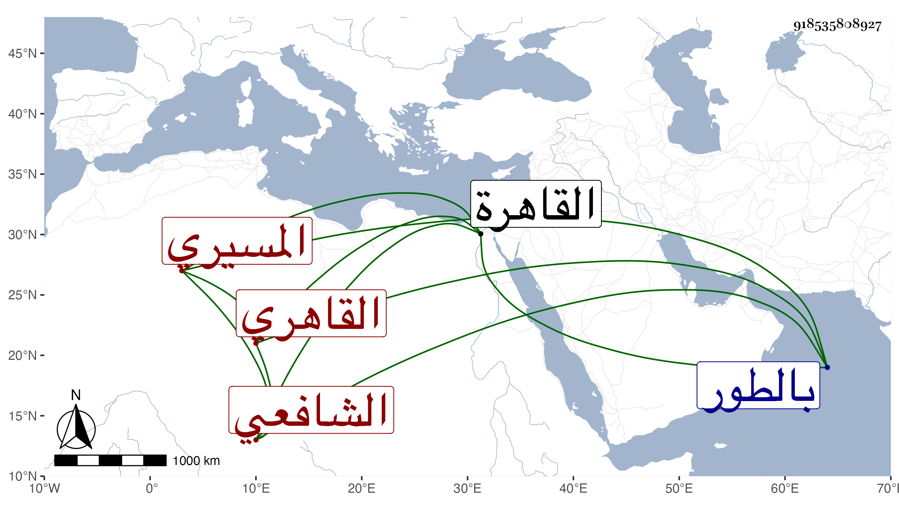

0902Sakhawi.DawLamic.ITO20230111-ara1.EIS1600.918535808927
Biography ID: 918535808927
276
أحمد بن محمد بن أحمد شهاب الدين المسيري ثم القاهري الشافعي ويعرف بابن حذيفة وهو ابن عم محمد بن أحمد الآتي . قدم القاهرة فاشتغل بالفقه والعربية يسيرا وتردد لبعض الشيوخ وأدمن مطالعة شرح المنهاج للتقي الحصني وكان قد كتبه أو جله بخطه وحضر عندي كثيرا في مجالس الإملاء وغيرها وسمع بقراءتي على جماعة ورأى لي مناما حسنا أثبته في مكان آخر بل سمع على شيخنا وغيره وكان من جماعة الغمري ثم إمام الكاملية صوفيا بالصلاحية والبيبرسية وبيده بعض دريهمات . مات في أحد الربيعين سنة خمس وسبعين بالطور راجعا من مكة بعد أن حج فإنه كان ممن سافر صحبة إمام الكاملية . وقد اشترك مع الشهاب المسيري الماضي قريبا في اسمه واسم أبيه وجده ونسبته وذاك متيمز باسم جد أبيه يحيى وبفضيلته وشهرته .
